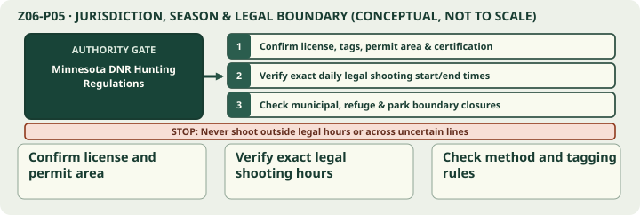

Z06-P05 · Hunting and fishing · New manuscript
Minnesota Hunting Licenses, Permit Areas and Legal Shooting Hours
Verify hunting licenses, deer permit areas, seasonal dates, legal shooting hours, and method rules before entering the field.
When it applies · Minnesota big-game, small-game, and migratory-bird hunting seasons.
Equipment · Valid license/tags, current MN DNR Hunting & Trapping Regulations, sunrise/sunset table, timepiece.

Actions
- Verify valid hunting licenses, species stamps, lottery/permit-area authorizations, and firearms-safety certification requirements in the current Minnesota DNR handbook.[H02, H03]
- Confirm official legal shooting hours adjusted for longitude and date before afield travel, and follow mandatory electronic or physical harvest registration rules.[H02]
- Check local municipal discharge ordinances, county restrictions, and state-park or refuge closures before hunting near developed areas.[H02, L07]
Failure recognition · Hunting across a permit-area boundary, outside legal shooting minutes, or without required certification violates state wildlife law and endangers bystanders.[H02, H03]
Verify · Permit area map, exact legal shooting window, valid tags, and local ordinance checks are verified on the current check date.[H02]
Stop or change course · Stop hunting immediately at the close of legal shooting hours, when boundary lines are unclear, or when target identification is uncertain.[H02, H03]
Evidence and editorial notes
- H02 · Minnesota DNR · Minnesota Hunting and Trapping Regulations (Current web edition)
- Section: Hunting licenses, zones, seasons, and legal methods · Conditions: Minnesota big game, small game, and bird hunting
Support: Hunters must verify current license, permit-area, season, legal-hours, blaze-clothing, and method rules with the governing authority prior to afield activity.
Limitations: Private-land trespass law, municipal ordinances, and tribal jurisdiction apply separately; emergencies do not suspend wildlife law. · Conflicting evidence: None noted.
Editorial note: Establishes Z06 hunting authority gate. · Specialist reviewer: Minnesota DNR wildlife law reviewer
Primary source · checked 2026-11-25 - H03 · Minnesota DNR · Firearms Safety Certification and Hunter Education (Current web edition)
- Section: Four fundamental firearm safety rules and certification · Conditions: Any firearm handling, transport, or field carry
Support: Treat every firearm as loaded, keep the muzzle in a safe direction, keep finger off the trigger until ready to shoot, and verify target and what is beyond it.
Limitations: Certification is required by age/statute in Minnesota; written summaries never substitute for formal certified safety instruction. · Conflicting evidence: None noted.
Editorial note: Mandatory Z06 bounded weapon-safety gate. · Specialist reviewer: Certified hunter-education and firearm safety instructor
Primary source · checked 2026-11-25 - L07 · Minnesota DNR · Scientific and Natural Areas Visitor Rules and Prohibitions (Current web edition)
- Section: Hunting and trapping · Conditions: Minnesota SNA and adjacent state land
Support: Verify the current rules for the precise site. Minnesota DNR lists trapping rules by SNA.
Limitations: Use separate state-park, recreation-area, and other land rules. Private permission does not supersede law. · Conflicting evidence: Conditions are recorded in the A03 audit.
Editorial note: Clarifies where bystanders/pets may encounter lawful sets. · Specialist reviewer: Public-lands manager
Primary source · checked 2026-11-25
Source lineage · New manuscript (Z06 P17 Minnesota regulations) · Classification · New manuscript.